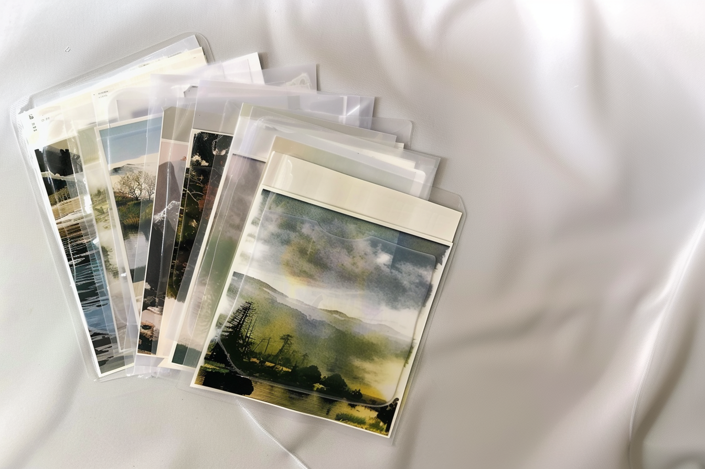

Как правильно заваривать чай разной ферментации?
В этой статье мы разберем, как правильно заваривать чай различных типов ферментации, чтобы максимально раскрыть их вкус и аромат.

Как выбрать качественный чай
В этой статье мы расскажем, как распознать хороший чай в магазине.
Экзотические чаи, которые стоит попробовать
В этой статье мы расскажем о редких и необычных сортах чая, которые стоит попробовать каждому любителю этого напитка.

Чайные смеси: Как создать свой уникальный вкус
В этой статье мы расскажем, как правильно подбирать ингредиенты и создавать уникальные чайные композиции, которые порадуют вас и ваших близких.